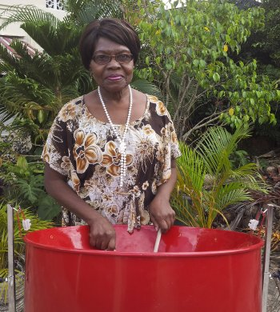

Women In Pan
Merle Albino-de Coteau

Mrs. Merle Albino-de Coteau earned the distinction of being the first Female to arrange a Panorama Selection, which was the Mighty Sparrow ‘s “Mas in May” in 1972.
Born into a musical family in Success Village, Laventille, in 19??. Mrs. de Coteau is a graduate of McGill University, Canada, as well as of the University of the West Indies (UWI). She is also the holder of several awards for contribution to music in T&T.
Her experience as an arranger began in 1969 with the Chase Manhattan Bank Savoys. She continued arranging for several bands, including her school’s steelband, Mt. Hope Junior Secondary, for whom she arranged Is de Mas’ in We by Sparrow. She also arranged Music Makers’ Toco Band by Lord Kitchener, and De Falla’s Ritual Fire Dance for the Pan Handlers Steel Orchestra for Pan is Beautiful II in 1982.
Besides being an organist at the Corpus Christi Roman Catholic Church in Success Village, Merle Abino de Coteau is a teacher/lecturer at several institutions throughout Trinidad and Tobago (T&T). She is also the Music Director of Music Makers, a music school that was founded thirty (30) years ago, and retired as Director of Culture from the Ministry of Community Development, Culture and Women’s Affairs.
She was honoured on the twentieth (20th) anniversary of the National Woman’s Action Committee for her contribution to Culture, in particular the Calypso Art form in February 2004. She is also one of the recipients of a Kwanza Award (2001), a national award, the Humming Bird Medal (1993), and a Sunshine Awards (1989) at Brooklyn Academy of Music (BAM), for her contribution to culture, particularly for calypso and steelband activities.
Natasha Joseph
Source: https://www.panonthenet.com/woman/2014/natasha-joseph.htm#google_vignette
One of the most respected women in pan, Natasha Joseph began to teach herself music by absorbing material from secondary school workbooks at age 11. Hailing from Barataria, she switched from Barataria Secondary School to Malick Secondary School where she started playing the steelpan at age 15. Within 3 months of learning the instrument, Natasha began arranging for her school band.
She joined Potential Symphony Steel Orchestra for the 1992 Panorama season when they won the Pan Ramajay competition, and became their Drill Master from 1994-1997. After placing second in the Pan Ramajay soloist skills competition in 1993, Joseph went on to join the Panazz Players and toured extensively with the group. Panazz won the Sunshine Award in 1997 for Best Recording by a steelband.
She has been a seasonal member of Phase II since 1998, and has worked closely with its Captain Len “Boogsie” Sharpe since 2007. She is considered to be one of Phase II Steel Orchestra‘s most valued members/ assistants, and was also the drill master for Tobago’s Carib Dixieland Steel Orchestra when they won Tobago Panorama with ????
Natasha is a composer, player, driller, administrator, and pan lover. As composer and arranger, she notes that she is heavily influenced by jazz music and the work of renowned local cultural icons like Clive Bradley, Len “Boogsie” Sharpe, Aldwyn Roberts (Lord Kitchener), Arthur De Coteau and Earl Rodney.
In 2003, she was accepted at Berklee College of Music in Boston, but couldn’t get sufficient sponsorship to take up the opportunity. She then set her sights on the University of Trinidad and Tobago (UTT).
Pat Bishop
(6 May 1940 – 20 August 2011)

Patricia Alison "Pat" Bishop was a Trinidadian educator, music director, artist, and cultural icon. She was one of the first women to arrange for steel orchestras and was the recipient of the Trinity Cross, the highest National Award of Trinidad and Tobago.
Born in May 1941 in Port of Spain, Pat attended Tranquillity Girls' School and then studied at Bishop Anstey High School. In 1958, she won the Trinidad & Tobago National Government Scholarship and left for England to pursue a bachelor’s degree in fine arts from King’s College, Durham University. Upon completion of her degree, in which she studied both painting and music, Bishop returned to Trinidad and began teaching at her former high school, Bishop Anstey.
While performing as a singer with the Tripoli Steel Orchestra, Bishop decided to arrange music. Beginning with hymns and classical works, she soon turned toward arranging music for steel orchestras. She was one of the first women to arrange music specifically for steelbands. Among those with whom she collaborated in music arrangement for pan drums were pannists, composers and arrangers like Ray Holman, Ken “Professor” Philmore, Jit Samaroo, and Len “Boogsie” Sharpe, as well as for the bands Birdsong, Desperadoes Steel Orchestra, Pandemonium, and Phase II.
Bishop brought her classical music training into the arrangements she wrote, merging them with the sounds of steelpan. One of her concerns was that the mastery of noted male pan icons would be lost, because as untrained musicians they lacked the literacy to score their works. She advocated for steelpan music to be taught in schools, so that students could carry on the tradition by learning its history, techniques and the theory behind performance.
In 1981, Bishop was one of the founders of the Schools Steelband Music Festival and served as both a resource and judge for the festival for many years. She had a long history of consultancy with art and cultural groups and became known as "The First Lady of Pan" for her depth of knowledge and skill in bringing steelbands to prominence.
During the 1980s, Bishop became the director of the Desperadoes Steel Orchestra. While arranging music for the Desperadoes, she also contracted with major venues gaining a respected reputation in the steelband world, eventually taking them on eight major tours in the United States.[12] In 1987, the group played at Carnegie Hall with Liza Minelli and The New York Pops Orchestra, at the Apollo Theatre in Harlem, at Rockefeller Centre and at the Brookly Academy of Music. The Rockefeller Centre performance was taped and aired on Channel 4, the NBC affiliate in New York City.
Bishop directed and prepared some of Trinidad's most noted steelbands in festival competitions and critically reviewed pan music for Radio Trinidad. In 1986, she was awarded the Humming Bird Gold medal, by the government of Trinidad and Tobago.
In 1987, Pat Bishop took over direction of the choir, The Lydians, when its director Joyce Spence became ill. Under Bishop’s leadership, the singers developed a diverse repertoire of challenging music including Caribbean, Latin American and European Classical music.
She developed a steelpan orchestra, known as the Lydian Steel, to accompany performances of The Lydians choir, which included traditional instruments, 20 steel pans, Tassa drums, and African drums. Combining the musical performances with folk and ballet dancers, The Lydians' shows represented the cultural mix of indigenous and European culture that is uniquely Caribbean. This led to her nickname as “The Archbishop of Pan”.
In 1995, Bishop was awarded an honorary doctorate from UWI and the following year, received the highest national honour, when she was awarded the Trinity Cross.
More about Pat Bishop @ https://en.wikipedia.org/wiki/Patricia_Bishop#cite_note-FOOTNOTEJardim2002181-11 Pat-Bishop-Her-Works-Her-Legacy PDF (auditorium.centralbankarts.org.tt) https://auditorium.centralbankarts.org.tt › 2022/11Girl Pat Steel Orchestra 1951-1955
Sources: https://grjoseph.com/2018/09/07/girl-pat-steel-orchestra-castillianne-juliana1956/ Girl Pat Steel Orchestra - A Celebration of Women in the https://www.panonthenet.com/history/von-martin/girl-pat-beryl-pat-pat-von-martin.htm
Steel pan’s historical evolution included a period when society viewed steelpan players as men with bad reputations, rebellious and prone to unaccepted behaviours, from the lower socio-economic communities in the society. The early developments did not include females. The Girl Pat Steel Orchestra broke these barriers.
Emerging in 1951, the Girl Pat Steel Orchestra was the first female steel orchestra in Trinidad and Tobago. The band was started by Hazel Henly, a pianist and school teacher, at her home in Newtown, Port of Spain, with a group of students from Bishop Anstey High School. Drawn from middle-class Trinidad, the group used pans borrowed from Invaders Steel Orchestra, a “middle-class” band from neighbouring Woodbrook.
Among the other pioneers of ‘Girl Pat’ were Marjorie Boothman and the Maurice sisters, Barney and Pat. Marjorie Boothman was a sister of the famous Holder brothers, Boscoe and Geoffrey. Hazel and Marjorie had first met in the 1930s when they were teachers at Tranquillity Intermediate School in Port of Spain.
The Orchestra was first known as the White Stars but changed to Girl Pat, the name of a yacht anchored in Chaguaramas, Trinidad. Ellie Mannette taught the band and, captained by Hazel Henly, assisted by the Maurice sisters and supported by dance icon Beryl Mcburnie, the Girl Pat Steel Orchestra became immensely popular. However, they disbanded in 1955 due to personal obligations and work commitments of band members soon after their tour to Guyana and Jamaica.
Despite their short life as a steel orchestra, the Girl Pat Steel Orchestra was well-respected. The group was often invited to play at functions and events, they made public appearances at charity shows and on radio programmes, and were invited to tour British Guiana (Guyana), where they received a tremendous reception at Government House and at the Botanical Gardens. They also impressed audiences on their tour of Jamaica with the Little Carib Theatre.
The advent of ‘Girl Pat’ represented not only a breaking of the gender barrier in the development of the steel band movement, but a shattering of the class barriers as well.
https://www.youtube.com/watch?v=Lf49Q0ci5HQ The Girl Pat Steel Orchestra playing Grey Clouds in 1957Hazel Henly (1917-2007)

Hazel Henly was born in the United States to Trinidadian parents, and was sent to Trinidad for her secondary education. She lived with her aunt at 79 Picton Street in Newtown and attended one of Port of Spain’s premier secondary schools, Bishop Anstey High School for Girls. She later became a pianist and school teacher at Tranquillity Intermediate School in Port of Spain where she met Marjorie Boothman, a sister of the famous Holder brothers, Boscoe and Geoffrey.
Though she became fascinated by the steelpan, panyards at that time were not considered a place for “respectable” women. So in 1950, Henly and Boothman gathered a group of students from Bishop Anstey High School to learn to play the pan. They used pans borrowed from Invaders Steel Orchestra in Woodbrook, and were taught by Invaders captain, Ellie Mannette. Emerging in 1951, the Girl Pat Steel Orchestra was the first female steel orchestra in Trinidad and Tobago.
Hazel Henley’s contribution to the steel pan movement is understated and sometimes overlooked. She devoted herself to the culture of the land in her efforts to advance the art of the steelpan in an era when women’s participation in the advancement of the steel pan was frowned upon and not regarded as admirable. Hazel dedicated herself to teaching the girls, and offered herself and her home to continue this outpouring of exercises in performing and staging. This was an opportunity for the girls to maintain the expressions of the cultural traditions of dance, Carnival and steel pan playing.
For her efforts, Gilman Figaro and the Board of Sunshine Awards in New York, honored Henley by installing her in their Hall of Fame, billed as Caribbean Rhythms in 1999 at Tribeca Performing Arts Centre, Manhattan, New York.
Think you've mastered this topic?
Test Your Knowledge →